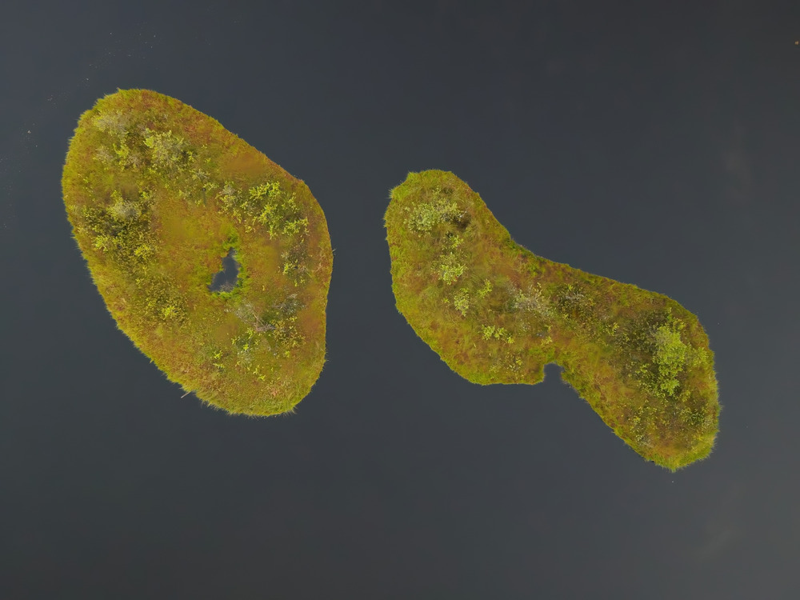
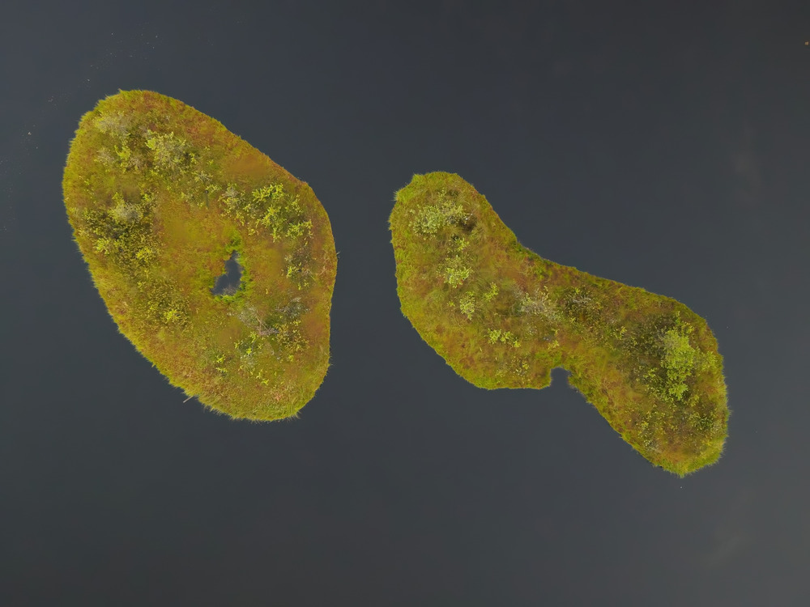

Witaj na stronie konferencji Pakt dla Mokradeł!
Serdecznie zapraszamy na drugą edycję konferencji Pakt dla Mokradeł, której celem będzie dyskusja nad kluczową rolą, jaką mokradła odgrywają w ochronie bioróżnorodności, łagodzeniu skutków zmiany klimatu i utrzymaniu usług ekosystemowych.
Niniejsze spotkanie naukowców i praktyków ma integrować ekspertów, naukowców, przedstawicieli administracji państwowej i organizacji pozarządowych, aktywistów, przedstawicieli biznesu oraz pasjonatów ochrony środowiska, aby umożliwić wymianę wiedzy oraz stworzyć przestrzeń do dyskusji nad aktualnymi problemami i wyzwaniami w ochronie mokradeł, projektach odtwarzania, zagospodarowania, oraz ramach politycznych niezbędnych do ochrony tych wyjątkowych ekosystemów.
Będziemy rozmawiać o torfowiskach, rzekach, jeziorach, obszarach nadmorskich, mokradłach miejskich, leśnych oraz tych w krajobrazie rolniczym. Sesje będą poświęcone m.in. zmianie klimatu, globalnemu ociepleniu, paleoklimatologii, paleoekologii, archeologii mokradeł, monitoringowi przyrodniczemu, badaniom eksperymentalnym, ochronie mokradeł w lasach, aktom prawnym, m.in. Nature Restoration Law, Green Deal, restytucji mokradeł, rolnictwu bagiennemu oraz usługom ekosystemowym.
Uczestnicy będą mieli okazję wziąć udział w wykładach, sesjach posterowych, spotkaniach z ekspertami, panelach dyskusyjnych, warsztatach i wystawach tematycznych. Jest to wyjątkowa okazja do nawiązania kontaktów i współpracy nad innowacyjnymi rozwiązaniami na rzecz ochrony mokradeł dla przyszłych pokoleń.
Zachęcamy do rejestracji poprzez formularz w zakładce Zgłoszenia.
Komitet organizacyjny
Aktualności
Program
Nasz program został starannie zaplanowany, aby zapewnić uczestnikom jak najwięcej wartościowych informacji i doświadczeń. W ciągu trzech dni konferencji odbędą się:
- Prelekcje: Wystąpienia ekspertów, którzy podzielą się swoimi najnowszymi badaniami i doświadczeniami.
- Sesje plakatowe: Prezentacje plakatowe, na których uczestnicy będą mogli zapoznać się z różnorodnymi projektami i badaniami.
- Spotkania z ekspertami: Okazje do bezpośredniej wymiany wiedzy i doświadczeń z liderami w dziedzinie ochrony mokradeł.
- Panele dyskusyjne: Żywe debaty na temat kluczowych wyzwań i przyszłości mokradeł.
Szczegółowy harmonogram konferencji zostanie opublikowany wkrótce.
Zgłoszenia
Jeśli chcesz wziąć udział w konferencji Pakt dla Mokradeł, zapraszamy do wypełnienia formularza zgłoszeniowego.
Prelegenci
Poznaj naszych prelegentów!
W tej sekcji będziemy przedstawiać sylwetki wyjątkowych specjalistów, którzy podzielą się swoją wiedzą i doświadczeniem podczas konferencji.
Dowiedz się więcej o ich osiągnięciach i tematach, które będą poruszane w trakcie ich wystąpień.
Lista prelegentów będzie na bieżąco aktualizowana.
Sponsorzy
Konferencja Pakt dla Mokradeł nie mogłaby się odbyć bez wsparcia naszych sponsorów.
Dzięki ich zaangażowaniu możemy zapewnić wysoki poziom merytoryczny wydarzenia oraz komfort dla wszystkich uczestników.
W tej sekcji znajdziesz informacje o naszych sponsorach, którzy wspierają ochronę mokradeł i zrównoważony rozwój.
Chcesz dołączyć do grona sponsorów? Skontaktuj się z nami!
Kontakt: paktdlamokradel2025@gmail.com
Komitet organizacyjny
- prof. dr hab. Mariusz Lamentowicz
- dr hab. Bogdan H. Chojnicki, prof. UPP
oraz
- Mariusz Bąk
- Mateusz Draga
- dr Kamila M. Harenda
- dr Monika Karpińska-Kołaczek
- dr hab. Piotr Kołaczek, prof. UAM
- Hanna Machejek
- dr hab. Katarzyna Marcisz, prof. UAM
- dr hab. Jakub Niebieszczański, prof. UAM
- Patryk Poczta
- Witold Szambelan
- Daria Wochal
- dr Danuta Żurkiewicz
Kontakt: paktdlamokradel2025@gmail.com
Strategicznym Partnerem Konferencji jest Centrum Ochrony Mokradeł.Komitet naukowy
- prof. dr hab. Piotr Banaszuk
- prof. dr hab. Klaudia Borowiak
- prof. dr hab. Radosław Dobrowolski
- prof. dr hab. Krzysztof Fortuniak
- dr hab. Maciej Gąbka, prof. UAM
- dr hab. Mateusz Grygoruk, prof. SGGW
- dr hab. Iwona Hildebrandt-Radke, prof. UAM
- prof. dr hab. Radosław Juszczak
- dr hab. Wiktor Kotowski, prof. UW
- dr Łukasz Kozub
- prof. dr hab. Andrzej Michałowski
- Paweł Pawlaczyk
- prof. dr hab. Grzegorz Rachlewicz
- prof. dr hab. Krzysztof Szoszkiewicz
- prof. dr hab. Wojciech Tylman
- prof. dr hab. inż. Lesław Wołejko